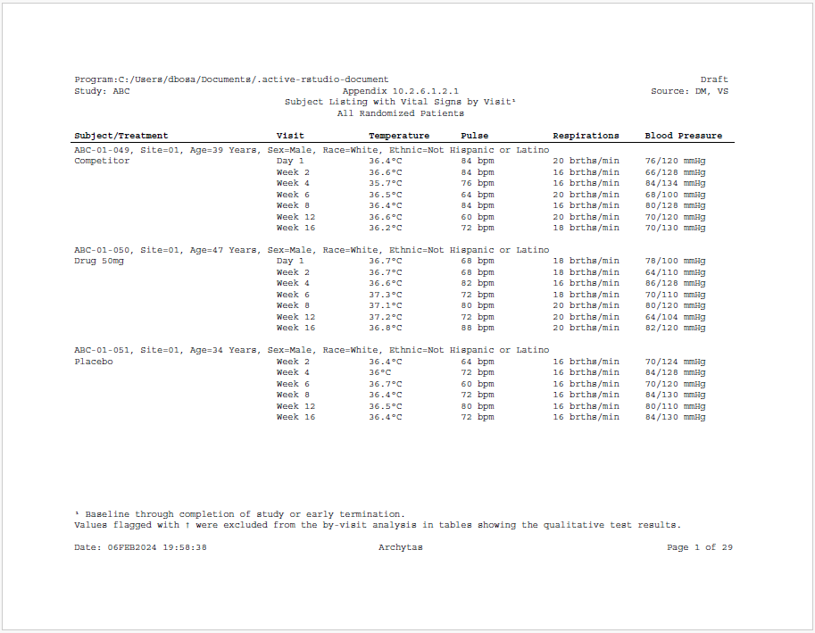

Here is an example of a subject listing using the sassy system of functions. The example shows demographics for each patient and vital signs by visit.
Note the following about this example:
datastep
function from the libr package.header = TRUE parameter.footer = TRUE parameter.supsc and symbol functions from the
common package have been used to create superscripts
and symbols in the titles, footnotes, and body of the report.
library(sassy)
# Prepare Log -------------------------------------------------------------
options("logr.autolog" = TRUE,
"logr.on" = TRUE,
"logr.notes" = FALSE)
# Get path to temp directory
tmp <- tempdir()
# Get sample data directory
dir <- system.file("extdata", package = "sassy")
# Open log
lf <- log_open(file.path(tmp, "example11.log"))
# Prepare formats ---------------------------------------------------------
sep("Prepare formats")
fc <- fcat(SEX = c("M" = "Male", "F" = "Female"),
AGE = "%d Years",
RACE = value(condition(x == "WHITE", "White"),
condition(x == "BLACK OR AFRICAN AMERICAN", "Black or African American"),
condition(x == "ASIAN OR PACIFIC ISLANDER", "Asian or Pacific Islander"),
condition(TRUE, "Other")),
WEIGHT = "%6.2f kg",
EAR = c("L" = "Left", "R" = "Right"),
DOSE = "%4.2fug",
ETHNIC = value(condition(x == "NOT HISPANIC OR LATINO", "Not Hispanic or Latino"),
condition(x == "HISPANIC OR LATINO", "Hispanic or Latino"),
condition(TRUE, "Unknown")),
ARMT = value(condition(x == "ARM A", "Placebo"),
condition(x == "ARM B", "Drug 50mg"),
condition(x == "ARM C", "Drug 100mg"),
condition(x == "ARM D", "Competitor"),
condition(TRUE, "Not Treated/Screen Failure")),
UNITS = value(condition(x == "BEATS/MIN", "bpm"),
condition(x == "BREATHS/MIN", "brths/min"),
condition(x == "C", symbol("degC")),
condition(x == "mmHg", "")),
VISIT = value(condition(x == "DAY 1", "Day 1"),
condition(x == "WEEK 2", "Week 2"),
condition(x == "WEEK 4", "Week 4"),
condition(x == "WEEK 6", "Week 6"),
condition(x == "WEEK 8", "Week 8"),
condition(x == "WEEK 12", "Week 12"),
condition(x == "WEEK 16", "Week 16"),
condition(TRUE, "Early Termination"))
)
# Prepare Data ------------------------------------------------------------
sep("Prepare Data")
libname(sdtm, dir, "csv")
lib_load(sdtm)
put("Format desired vital signs")
datastep(sdtm.VS,
keep = v(USUBJID, VSTESTCD, VSCOMB, VISITNUM, VISIT),
where = expression(VSTESTCD != 'HEIGHT' & VISITNUM > 0),
{
if (VSORRESU == "C")
VSCOMB <- paste0(VSORRES, fapply(VSORRESU, fc$UNITS))
else
VSCOMB <- paste(VSORRES, fapply(VSORRESU, fc$UNITS))
}) -> vso
put("Pivot vitals signs")
proc_transpose(vso, id = VSTESTCD, var = VSCOMB,
by = v(USUBJID, VISITNUM, VISIT)) |>
proc_sort(by = v(USUBJID, VISITNUM)) -> vsot
put("Assign and apply formats")
formats(sdtm.DM) <- fc
dmf <- fdata(sdtm.DM) |> put()
put("Prepare final data for reporting")
datastep(dmf, format = fc,
by = USUBJID,
retain = list(PTCNT = 0, PG = 1),
merge = vsot, merge_by = USUBJID,
{
# Combine subject info into label row
BASELINE <- paste0(USUBJID, ", Site=", SITEID,
", Age=", AGE, ", Sex=", SEX, ", Race=", RACE,
", Ethnic=", ETHNIC)
# Deal with non-recorded blood pressure
if (is.na(DIABP))
DIABP <- "-"
if (is.na(SYSBP))
SYSBP <- "-"
# Combine distolic and systolic in one column
BP <- paste0(trimws(DIABP), "/", trimws(SYSBP), " mmHg")
# Format treatment group
if (first.)
TREATMENT <- fapply(ARM, fc$ARMT)
else
TREATMENT <- ""
# Count up patients
if (first.) {
PTCNT <- PTCNT + 1
}
# Create paging variable with 3 patients per page
if (PTCNT == 4) {
PTCNT <- 1
PG <- PG + 1
}
}) -> final
# Create report -----------------------------------------------------------
sep("Create and Print Report")
tbl <- create_table(final, show_cols = "none",
width = 9, first_row_blank = FALSE,
header_bold = TRUE) |>
column_defaults(from = "VISIT", to = "BP", width = 1.25) |>
stub(v(BASELINE, TREATMENT), label = "Subject/Treatment") |>
define(BASELINE, label_row = TRUE) |>
define(TREATMENT) |>
define(VISIT, label = "Visit") |>
define(TEMP, label = "Temperature") |>
define(PULSE, label = "Pulse") |>
define(RESP, label = "Respirations") |>
define(BP, label = "Blood Pressure") |>
define(USUBJID, blank_after = TRUE, visible = FALSE) |>
define(PG, page_break = TRUE, visible = FALSE)
rpt <- create_report(file.path(tmp, "example11"), font = "Courier", font_size = 9) |>
add_content(tbl) |>
set_margins(top = 1, bottom = 1) |>
page_header("Program:" %p% Sys.path(), right = "Draft", width = 7) |>
titles( "Study: ABC", "Appendix 10.2.6.1.2.1", "Source: DM, VS",
columns = 3, header = TRUE, blank_row = "none") |>
titles("Subject Listing with Vital Signs by Visit{supsc('1')}",
"All Randomized Patients", align = "center", header = TRUE, blank_row = "below") |>
footnotes("{supsc('1')} Baseline through completion of study or early termination.",
"Values flagged with {symbol('dagger')} were excluded from the by-visit " %p%
"analysis in tables showing the qualitative test results.",
blank_row = "none", footer = TRUE) |>
page_footer("Date: " %p% toupper(fapply(Sys.time(), "%d%b%Y %H:%M:%S")),
"Archytas", "Page [pg] of [tpg]")
# Generate both RTF and PDF with same report object
res1 <- write_report(rpt, output_type = "RTF")
res2 <- write_report(rpt, output_type = "PDF")
# Uncomment to show reports
# file.show(res1$modified_path)
# file.show(res2$modified_path)
# Uncomment to show log
# file.show(lf)
# Clean Up ----------------------------------------------------------------
lib_unload(sdtm)
log_close()Here is an image of the first page of the RTF report produced by the above subject listing:

Here is the log produced by the above subject listing:
=========================================================================
Log Path: C:/Users/dbosa/AppData/Local/Temp/RtmpkNnsUE/log/example12.log
Program Path: C:/packages/Testing/procs/ProcsCombinedFigure.R
Working Directory: C:/packages/Testing/procs
User Name: dbosa
R Version: 4.3.1 (2023-06-16 ucrt)
Machine: SOCRATES x86-64
Operating System: Windows 10 x64 build 22621
Base Packages: stats graphics grDevices utils datasets methods base Other
Packages: tidylog_1.0.2 ggplot2_3.4.2 patchwork_1.1.3 procs_1.0.3
reporter_1.4.1 libr_1.2.8 fmtr_1.5.9 logr_1.3.4 common_1.0.8 sassy_1.1.0
Log Start Time: 2023-09-06 21:06:40.53712
=========================================================================
=========================================================================
Prepare Data
=========================================================================
Define data library
# library 'sdtm': 7 items
- attributes: csv not loaded
- path: C:/Users/dbosa/AppData/Local/R/win-library/4.3/sassy/extdata
- items:
Name Extension Rows Cols Size LastModified
1 AE csv 150 27 88.5 Kb 2023-08-07 17:51:40
2 DM csv 87 24 45.5 Kb 2023-08-07 17:51:40
3 DS csv 174 9 34.1 Kb 2023-08-07 17:51:40
4 EX csv 84 11 26.4 Kb 2023-08-07 17:51:40
5 IE csv 2 14 13.4 Kb 2023-08-07 17:51:40
6 SV csv 685 10 70.3 Kb 2023-08-07 17:51:40
7 VS csv 3358 17 467.4 Kb 2023-08-07 17:51:40
Load data into workspace
lib_load: library 'sdtm' loaded
Prepare format
# A user-defined format: 4 conditions
Name Type Expression Label Order
1 obj U x >= 18 & x <= 24 18 to 24 NA
2 obj U x >= 25 & x <= 44 25 to 44 NA
3 obj U x >= 45 & x <= 64 45 to 64 NA
4 obj U x >= 65 >= 65 NA
Prepare data
datastep: columns decreased from 24 to 5
# A tibble: 85 × 5
USUBJID SEX AGE ARM AGECAT
<chr> <chr> <dbl> <chr> <chr>
1 ABC-01-049 M 39 ARM D 25 to 44
2 ABC-01-050 M 47 ARM B 45 to 64
3 ABC-01-051 M 34 ARM A 25 to 44
4 ABC-01-052 F 45 ARM C 45 to 64
5 ABC-01-053 F 26 ARM B 25 to 44
6 ABC-01-054 M 44 ARM D 25 to 44
7 ABC-01-055 F 47 ARM C 45 to 64
8 ABC-01-056 M 31 ARM A 25 to 44
9 ABC-01-113 M 74 ARM D >= 65
10 ABC-01-114 F 72 ARM B >= 65
# ℹ 75 more rows
# ℹ Use `print(n = ...)` to see more rows
Convert agecat to factor it will sort correctly
Split by ARM
=========================================================================
Create Plots
=========================================================================
Create plot for ARM A
Create plot for ARM B
Create plot for ARM C
Create plot for ARM D
Combine 4 plots into 1 using patchwork
=========================================================================
Create and print report
=========================================================================
# A report specification: 1 pages
- file_path: 'C:\Users\dbosa\AppData\Local\Temp\RtmpkNnsUE/output/example12.rtf'
- output_type: RTF
- units: inches
- orientation: landscape
- margins: top 1 bottom 1 left 1 right 1
- line size/count: 9/36
- page_header: left=Sponsor: Company right=Study: ABC
- footnote 1: 'Program: DM_Figure.R'
- page_footer: left=Date Produced: 06Sep23 21:06 center= right=Page [pg] of [tpg]
- content:
# A plot specification:
- height: 4.5
- width: 7
- title 1: 'Figure 3.2'
- title 2: 'Distribution of Subjects by Treatment Group'
lib_sync: synchronized data in library 'sdtm'
lib_unload: library 'sdtm' unloaded
=========================================================================
Log End Time: 2023-09-06 21:06:43.938549
Log Elapsed Time: 0 00:00:03
=========================================================================